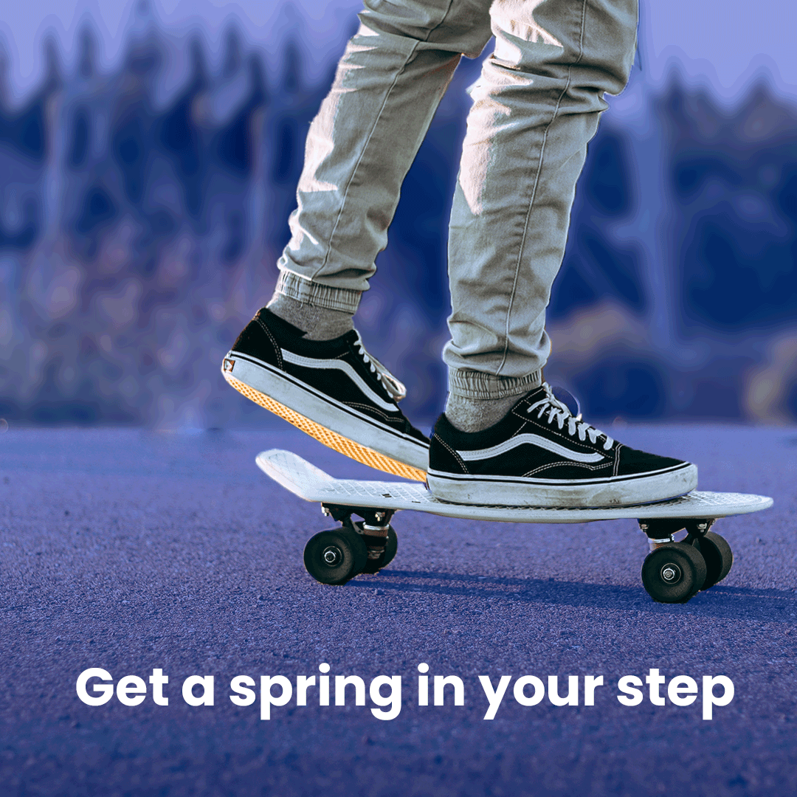

Anitmated GIF
I wanted to create an animated gif that would act as a fun and engaging advertisement on social media. The purpose is to encourage web traffic to the Sprint website and create a customer base. The dimensions of the gif are 1,020px x 1,020px which is the standard size for social media platforms such as Instagram.
- I opened a new blank document in Photoshop and imported the skate board image which I sourced from Unsplash photos.
- To create my background I had to cut the legs and skateboard into their own layers using the selection and lasso tools.
- I used the patch tool to cover over where the leg originally was so that when it moved, the background remained consistent with the rest of the photo.
- Once I had done this, I added a colour filter of the brand colour #1d14fb and set it to 45% opacity to give it a blue finish.
- I the copied the kicking leg layer so that I had two of them which I could set into different positions to give the illusion of movement.
- I added another layer where I used the pen tool to create small illustrations around the feet to direct the users vision towards the shoes.
- I also added the white promotional text to its own layer and positioned it at the bottom of the square image.
- Once I had all my assets in the Photoshop file, I was ready to create my frame animation using the Timeline feature.
- I created two frames and turned off certain layers which I did not want to be visible in one frame, such as the animations and the leg position, then then switched these to be visible on the second frame.
- I set the speed of each frame to 0.5 seconds and set them on a forever loop so the gif would continue.
- Once I was satisfied with the motion sequence I exported the it for web as a dithered GIF with 256 colours to prevent the quality reducing too much.